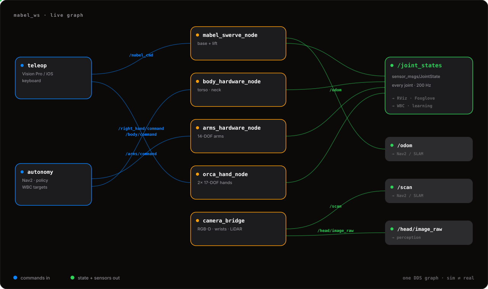

A single ROS 2 Humble workspace — mabel_ws — wraps every firmware bus behind standard
topics. Commands flow in, /joint_states flows out, and the exact same graph
drives the real robot or the MuJoCo twin. Flip one flag to choose.
Teleop and autonomy publish onto the command bus; the actuator drivers and the
sensor nodes publish back onto the state bus — /joint_states, /odom,
the camera images, and the LiDAR scan. Boot the twin and one mabel_mujoco_sim node
stands in for all of them. Consumers never touch CAN or RS-485; they see topics.

mabel_bringup/robot.launch.py takes a single use_sim argument —
the real robot is a federation of driver nodes; the sim is one monolithic node. The graph above is
identical either way.
ros2 launch mabel_bringup robot.launch.py
Brings up base.launch.py, body.launch.py, arms.launch.py
and sensors.launch.py as independent nodes — each owns one firmware bus and can
be restarted alone.
mabel_swerve_node (REV CAN), arms/body_hardware_node (Damiao CAN),
orca_hand_node (Feetech) each publish /joint_states at 200 Hz.
ros2 launch mabel_bringup robot.launch.py use_sim:=true
One mabel_mujoco_sim node replaces every driver — it owns physics, publishes the
same /joint_states, and listens on the same command topics.
Teleop, WBC, and Nav2 can't tell the difference — same topics, same types. Validate in sim, drop the flag, deploy. See Simulation.
A handful of topics is the entire interface between control and hardware. The base and lift even share one custom message — twist plus lift height plus a state byte.
| Topic | Type | Dir |
|---|---|---|
| /mabel_cmd | mabel_interfaces/MabelSwerveCmd | sub |
| /arms/command | arm joint command | sub |
| /body/command | torso + neck command | sub |
| /left_hand · /right_hand/command | 17-DOF hand command | sub |
| /joint_states | sensor_msgs/JointState | pub |
| /odom | nav_msgs/Odometry | pub |
The swerve base and the lift ride a single custom message — a body-frame twist, the target lift height, and a hardware-state byte. The driver runs the swerve IK and the tip-safe envelope below it; you just send where you want to go.
# MabelSwerveCmd.msg float32 vx # body-frame x velocity float32 vy # body-frame y velocity float32 omega # yaw rate float32 lift_pos # target lift height (m) uint8 hardware_state
mabel_ws/src.One robot.launch.py with a use_sim flag — federated hardware or monolithic sim.
swerve_node: takes /mabel_cmd, runs swerve IK, publishes /odom + /joint_states.
Damiao-CAN driver nodes for the 14-DOF arms and the torso + neck.
orca_hand_node + a joint-state relay for both 17-DOF Feetech hands.
camera_bridge: head RGB-D, dual wrist cams, and the base 2-D LiDAR on one clock.
The shared URDF, the custom messages, and the MuJoCo node — one kinematic tree, sim and real.